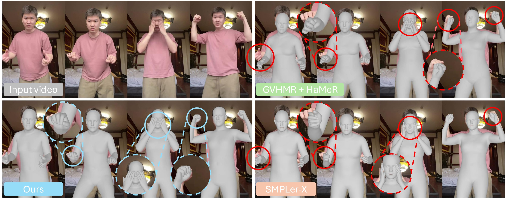
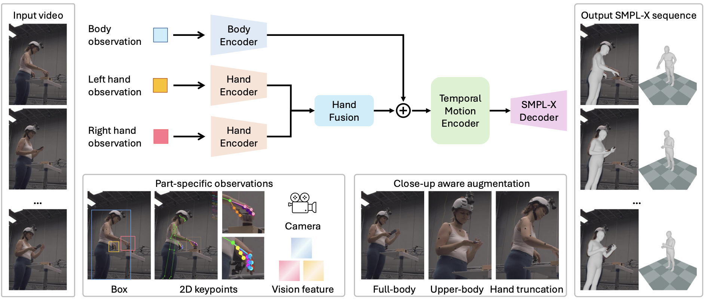
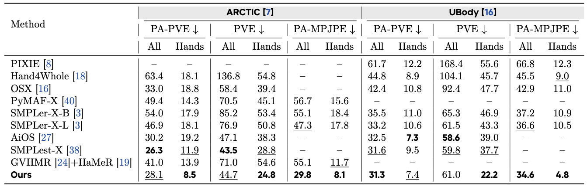
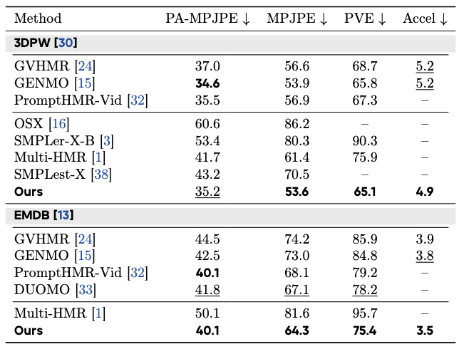

(1) DanceHMR recovers temporally coherent SMPL-X body and hand motion from monocular videos.
(2) A hand-aware temporal architecture fuses body context with left- and right-hand observations through
residual body-hand fusion, improving wrist consistency and detailed finger articulation.
(3) Close-up-aware augmentation makes the model robust to upper-body framing, hand truncation, motion blur,
and hands moving in or out of the image.

Monocular video human mesh recovery is essential for digital humans, avatar animation, and embodied
simulation, where both temporal stability and expressive whole-body motion are required. Existing video HMR
methods produce coherent body motion but often overlook detailed hand articulation, while image-based
whole-body methods recover SMPL-X meshes independently per frame, often leading to jittery and inaccurate
hand motion. We present DanceHMR, a temporally coherent whole-body HMR framework for challenging
in-the-wild monocular videos. DanceHMR unifies body context and part-specific hand observations through
residual body-hand fusion, enabling stable body motion and detailed hand recovery within a single temporal
architecture. We further introduce close-up-aware augmentation to improve robustness under upper-body
framing. Experiments on whole-body and body-only benchmarks demonstrate improved hand reconstruction,
competitive body accuracy, and temporally stable, 2D-consistent SMPL-X motion in real-world videos.

Framework overview. Given an input video, DanceHMR separately encodes body and hand observations, including vision features, 2D keypoints, bounding boxes, and camera cues. Left- and right-hand evidence is fused into a body-anchored representation as residual cues before temporal modeling, allowing the model to use local hand details when they are reliable while falling back to body context and temporal priors under occlusion, truncation, or blur. A temporal motion encoder and SMPL-X decoder then reconstruct coherent whole-body motion, including articulated hands. During training, close-up-aware augmentation simulates upper-body crops and hand truncation so the model handles livestream, vlog, speech, and dance-style compositions.
Training: DanceHMR is trained with a two-stage curriculum on motion capture, synthetic, and in-the-wild video data, including BEDLAM, MOYO, ARCTIC, EgoBody, AMASS, WHAC-A-Mole, 3DPW, and Human3.6M. The second stage places greater emphasis on high-quality SMPL-X and hand-centric data to refine fine-grained hand articulation.
Whole-body results

Body-only results

On ARCTIC and UBody, DanceHMR improves hand reconstruction while remaining competitive on whole-body accuracy. On 3DPW and EMDB, it also maintains strong body-only video HMR performance, showing that the hand-aware design does not sacrifice body motion quality.
@article{shen2026dancehmr,
title={DanceHMR: Hand-Aware Whole-Body Human Mesh Recovery from Monocular Videos},
author={Shen, Wenhao and Zhou, Ming and Zhang, Hengyuan and Bian, Siyuan and Xu, Youjiang and Lin, Xi},
journal={arXiv preprint},
year={2026}
}